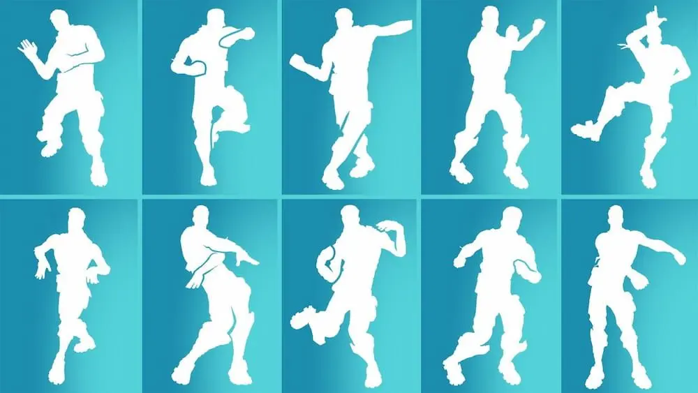
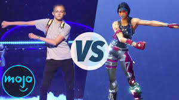
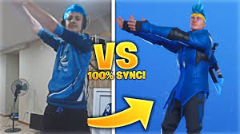

Fortnite has has a history of emotes. From the griddy, to the floss, almost every dance has made its way.
One controvertial topic going around the OG community, is if the new emotes are buns. Statistically, as a poll
from the fortnite OG's shows, 85% of people say that the pre chapter 2 emotes are the best.
Popular Fortnite Emotes:


Few Fun Fortnite Emote Facts:
- The 'Floss' was created by the 'Backpack Kid'
- There are 1,078 emotes in Fortnite
- Crowning Achievement is the most popular emote
Interested in this Fortnite game?
Download Fortnite right now!